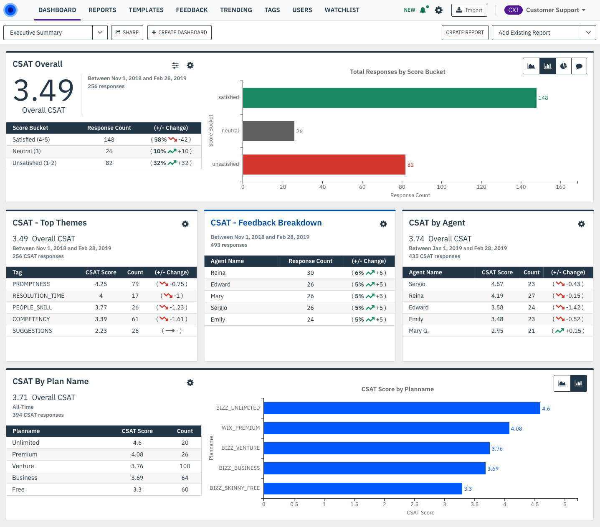
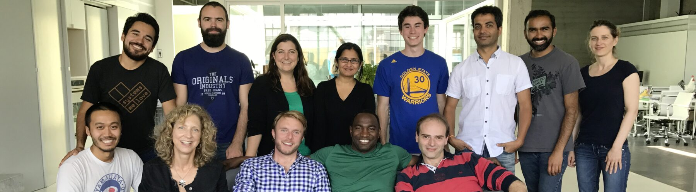
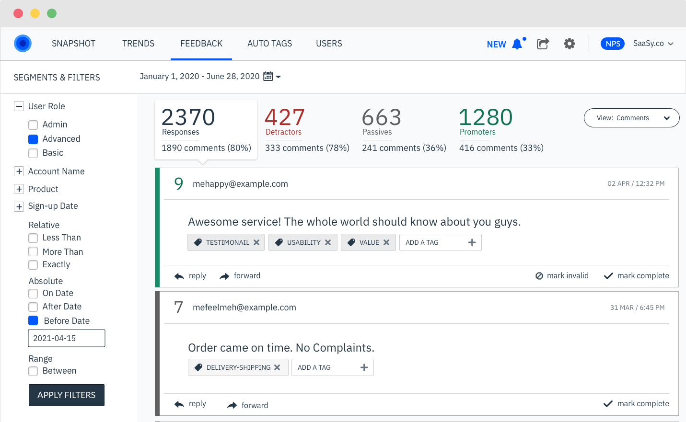
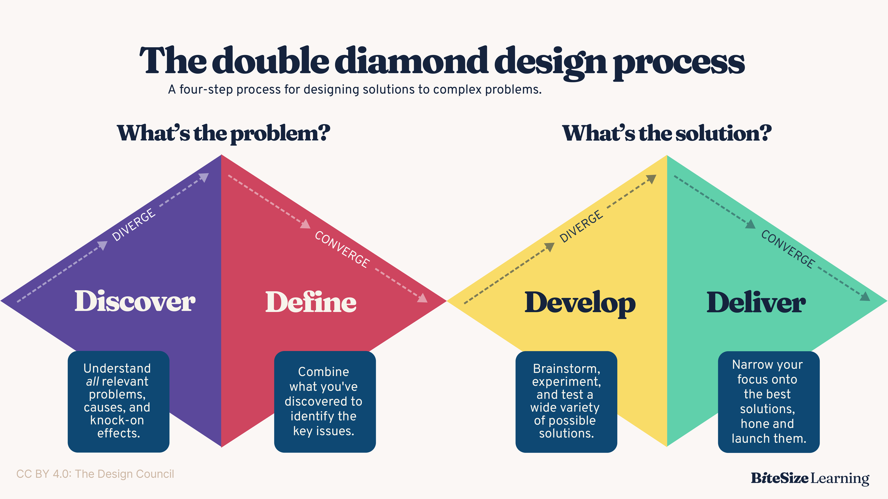
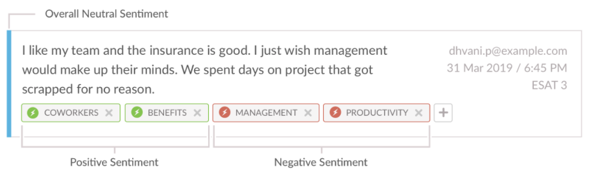
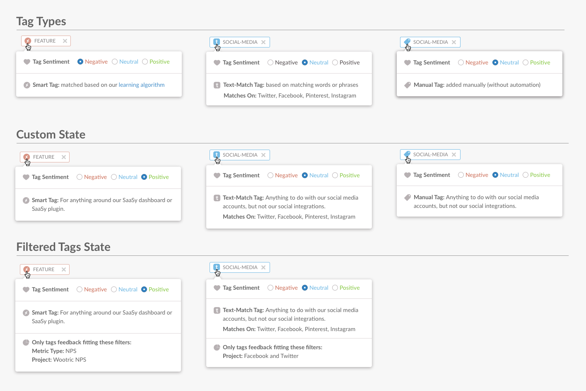
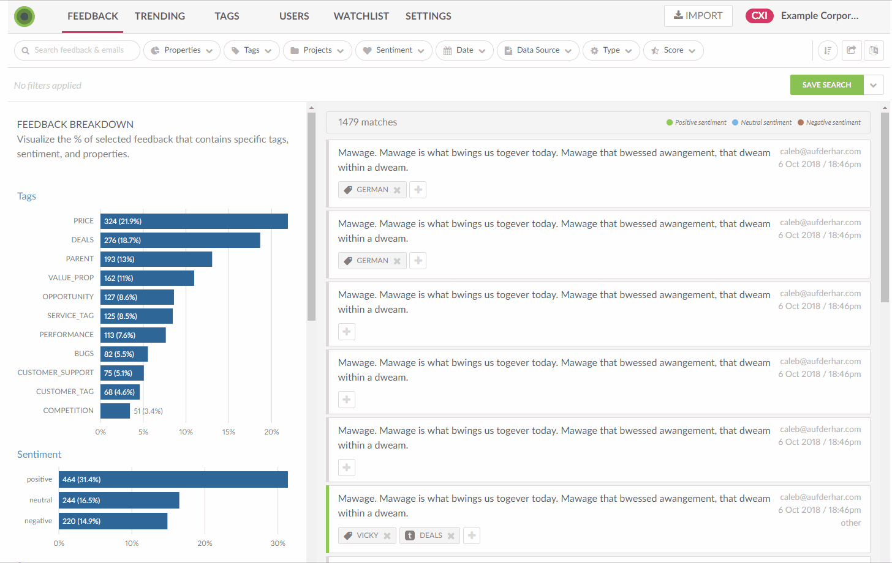
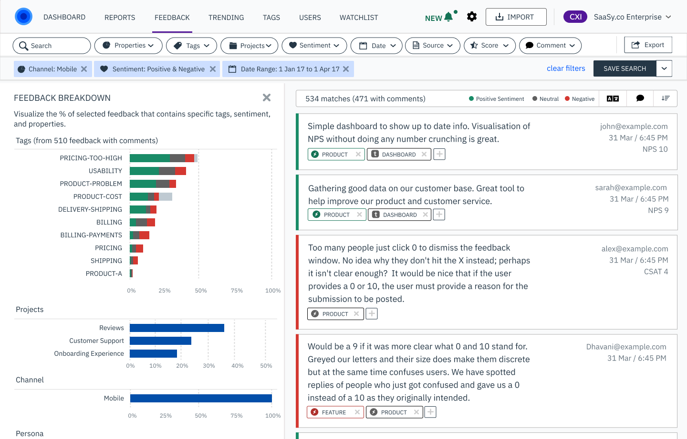

Case studies / Wootric
CXInsights - using AI to digest millions of surveys
Helping enterprise CX teams make sense of millions of survey responses without exporting a single spreadsheet.

What is it?
Wootric started as a survey company. Any business could drop a snippet of code into its website, mobile app, text or email and start collecting NPS, CSAT, or CES responses in minutes.
CXInsights (CXI) is the enterprise layer built on top of it. It pulls feedback from any survey source into one place. It let teams build their own dashboards, and use AI to automatically sort open-ended feedback into themes with sentiment, so a CX team can see what customers are saying at a scale no person could read.
"NPS on Steroids"Customer Success Manager

Role
- Senior Product Designer: led product meetings, led user interviews with customers, mentored designers, and ran data analytics reports.
- User Interviews: Conducted user interviews throughout the process of designing CXI.
- Cross-functional collaboration: Partnered with Marketing, Engineering, C-suite, and investors to build a product meant for Enterprise.
Impact
Growth metrics
- New Enterprise Customers: Zoom, DocuSign, Hubspot, Visma, Glassdoor, and HSBC.
- InMoment acquired Wootric in January 2021 to help it move more into the AI space.
- Cross-functional collaboration: Partnered with Marketing, Engineering, C-suite, and investors to build a product meant for Enterprise.
CXInsights helped Wootric move upmarket from startups to enterprise accounts like Zoom, DocuSign, Footlocker, Glassdoor, and HSBC, generating millions in sales. InMoment acquired Wootric in January 2021.
"[Wootric] allows our Support team to segment feedback by agent and other relevant business drivers to uncover insights that help us optimize our support experience, and it can also reveal bottlenecks that are best addressed by improving product features or design."Glassdoor
Problems
Big data
Enterprise customers receive millions of responses. Teams at companies like DocuSign, Zoom, and Glassdoor were exporting spreadsheets of feedback and building their own dashboards by hand. The most advanced used BI tools like Tableau, but that was slow and unfriendly for the people who actually needed answers.
A second problem sat underneath the first. Customers sent us whatever data their systems had, and it was rarely clean. One account might pass an empty property called company_name alongside a full one called company. Users would filter on the empty one, get zero results, and assume the product was broken. The people using Wootric usually had no control over that data either, since data cleanup is a company-wide problem.
" It’s so much easier when you have all of the feedback come into one place. You can look at the snapshot view. You can filter. You can triage. Honestly, it’s so much better than going through spreadsheets manually. I never want to do that again.”Customer Insights Manager, Hootsuite
Qualitative and quant research
User interviews
We ran many interviews with enterprise customers to understand how they reported on feedback today. Those conversations shaped the core feature list: custom dashboards, all feedback from every source in one place, actionable insights, and automatic categorization.
Session recordings caught what interviews missed. Watching people use the product, we saw them filter, hit zero results, and give up. Nobody mentions it because it's a common problem across the industry.
Public reviews said the same thing. Customers liked the simple dashboard but kept running into its limits the more data they had:
"I can't create a dashboard with different views/report (i.e.: by business unit, by country and etc)."Product Manager, small business · G2 review, May 2020
Accessibility & systems
- WCAG 2.2 AA compliance: Ran our own tests against WCAG compliance.
- Automated Audits: Using Axe DevTools, Lighthouse, and Microsoft’s Accessibility Insights.
- Voiceover and Color-blindness tests: Using the devices themselves we manually tested.
Benchmarks & data
Product analytics set the baseline. For the Standard Dashboard, weekly actives kept rising, few customers reported confusion, and CX managers were screenshotting it straight into their executive reports. I wanted to redesign it, but the data said customers liked it as it was. So we kept it as the free entry point and put new work into the enterprise layer.

Hypothesis & goals
Hypothesis: For customers with a lot of open-ended survey feedback, give them a simple out-of-the-box solution to analyze all their feedback in one place.
Goals:
- Bring feedback from every source into one place
- Let teams build custom dashboards without a BI tool
- Categorize feedback automatically so it scales to millions of responses
- Turn that data into insights a team can act on
Design Thinking
- Simple. There are a lot of places a customer can go for data analysis. We needed to give them value from day 1. An out-of-the-box experience.
- Actionable. Don't just show. Tell the customer what they can act on to create value.
- Transparent AI Decision-Making. Every machine-applied tag should say how it was applied and why, right where it appears.
- Meet people where they report. CX managers live in executive decks, so dashboards had to be clean enough to screenshot.
- Big Dirty Data. Customers were going to send us unstructured data from all sources. Inconsistent schemas, missing metadata, mislabeled, etc. The user experience needed to work around this.


Analysis, experiments & rapid prototyping
Competitive analysis
Across CX dashboards, segmenting data and viewing the results usually live on different pages. Unless a customer sends perfectly clean data, there's no way to know what a filter will return until you've applied it. That pattern is a big reason people dislike dashboards, and it became the gap CXI was designed to close.
- Tableau: Very technical analysis that was great. But customers would need an in-house person to do the analysis for them.
- Spreadsheets: Manual. Time consuming. But a spreadsheet was the most common answer for how customers handle their feedback now.
- Smaller AI companies: At the time there were smaller AI companies willing to build custom models for each customer. These were expensive and didn't have the industry knowledge.
Experiments
To categorize feedback at scale we tried three kinds of tags, each suited to a different level of customer control:
- Smart Tags match automatically using machine learning trained on large sets of feedback.
- Text Match Tags let users add specific phrases, such as "credit card" for a BILLING tag.
- Manual Tags let teams define their own categories with no automation.
Sentiment was layered on top of every response and every tag. Because that's a lot to absorb, each tag shows a hover card explaining its type, its sentiment, and how it was applied.

Rapid prototyping
- Controls: Our ML models allowed additional controls. It became a balance of how much should we expose as to not overwhelm.
- Custom Reports: The first reports we built worked directly with customers to reproduce the most common reports they made for themselves.
- Onboarding and Empty-State: After my team designed a fantastic onboarding for new users, we quickly pivoted when talking to the team. Most Enterprise customers would get a personal onboarding from an Account Manager after their data was already uploaded. Making onboarding and empty-state dashboards useless.
Sequencing & scaling out
We built in layers, each one getting tested with customers:
- Enterprise Executive Dashboard. Custom reports and dashboards with feedback from all sources in one place.
- Feedback Breakdown. See every segment and its response count before filtering, then click straight in. Every report needed to lead here to see the survey responses behind the reporting.
- AI/ML auto-categorization. Smart, Text Match, and Manual tags with sentiment, so the data tells a story at any volume.
- Watchlists. To monitor important customer segments that need immediate attention.

Outcome
For Enterprise customers, CXInsights became their most used app. Of Enterprise users, 80% of their time was now spent on Feedback Breakdown. The Feedback Breakdown let customers see their data before acting: which segments existed, how much data each held, and a one-click path to dig in or create a report.

Alongside Feedback Breakdown, CXInsights helped carry Wootric from focusing on startups to enterprise. Allowing us to sign our biggest contracts ever and taking ARR from $1 to $5 million before acquisition by InMoment in January 2021.
What customers said
"I personally love using the dashboard to monitor trends… It's really useful that they let you filter by promoters and detractors with the option of seeing only grades with comments."
"It's really easy to consult information and make reports. It's a really clear and easy-to-use platform."
"The UI is simple and clean but it's a robust platform overall. The dashboard has all the information you need."
"We immediately reach out to customers who has given us a low score and it has helped us to retain our customers."
Reviews from G2 crowd (from Wootric customers)
Conclusion
The most valuable fix wasn't a new chart. It was admitting that customer data was big, messy, and hard to work with. We needed to design for it. That lesson still applies across the industry: most CX dashboards still deal with empty screens, bad data, and lost trust.
With how AI has taken over, I'm glad I was there at the ground floor in 2020.
Press
- InMoment acquires digital feedback leader Wootric. InMoment.
- InMoment acquires digital feedback solutions provider Wootric. DestinationCRM.
- InMoment acquires CX company. Research Live.